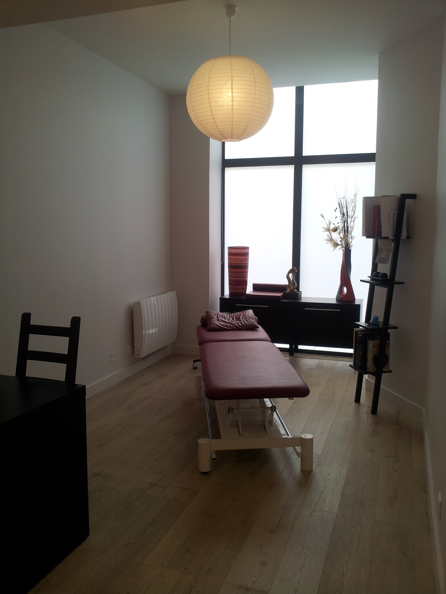

| Emeline
FANTINI Ostéopathe D.O. Consultante en lactation D.U. |
Cabinet d'ostéopathie et
allaitement 103, rue Pierre Corneille 69003 Lyon Tel : 06.59.31.85.82 Cliquez ici pour prendre RDV en ligne |
Maro
MUGNIER Ostéopathe D.O. |
Accueil

Bienvenue,
le cabinet d’ostéopathie se situe aux abords de la Préfecture du Rhône.
Il vous offre
ainsi un accès facilité en métro (arrêt
ligne B: Place Guichard), tram (arrêt T1:
Saxe-Préfecture), Bus C3, C4, C9, C13, C14, 27: arrêt
Saxe-Lafayette) comme en voiture étant tout proche du parking Parc Lafayette et Bonnel Servient.
Des plages d'accueil d'urgence sont prévues chaque jour afin d'assurer une prise en charge rapide.
L'ostéopathie en quelques mots...
Cette approche thérapeutique consiste à prévenir, diagnostiquer et traiter
manuellement
les dysfonctions de la mobilité des tissus et articulations du
corps humain. Ces dernières sont
susceptibles d'altérer par ailleurs l'état
général de santé. L’ostéopathe peut
traiter le
nourrisson, l'enfant, l'adulte et la personne âgée.
L'ostéopathie en France est reconnue depuis
la loi du 4 mars 2002, et
est réglementée depuis le mois de mars 2007. Les patients peuvent consulter
leur ostéopathe en première intention, c'est-à-dire sans passer par leur
médecin référent.